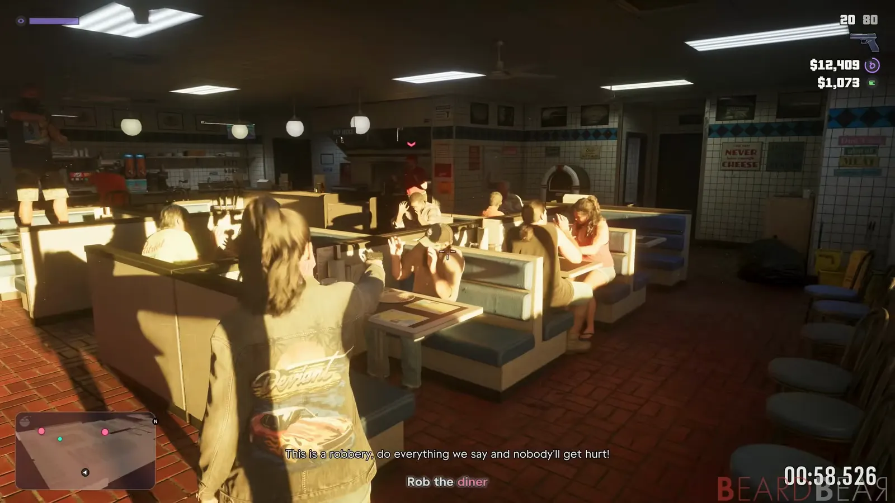
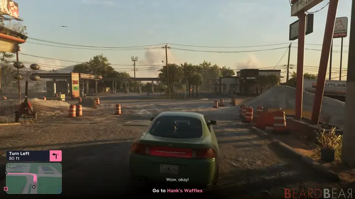
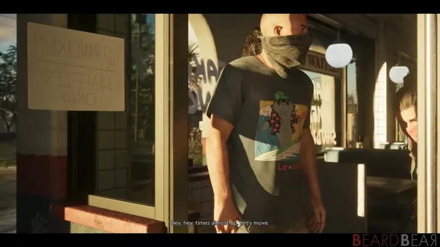
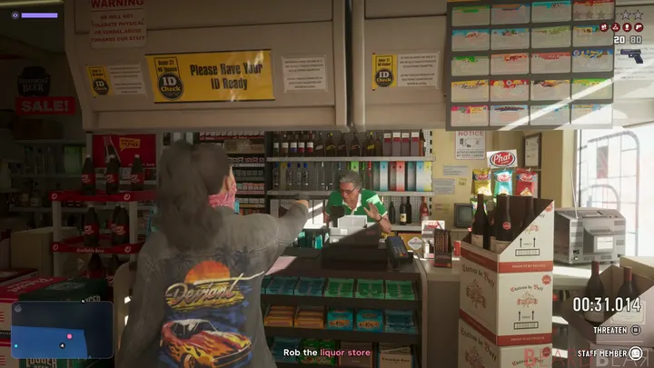
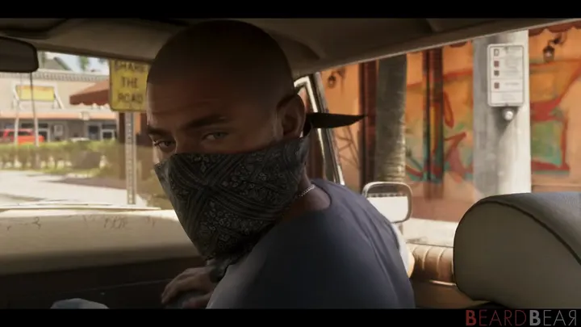
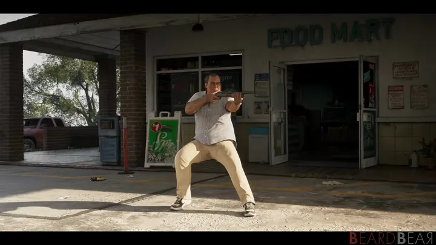
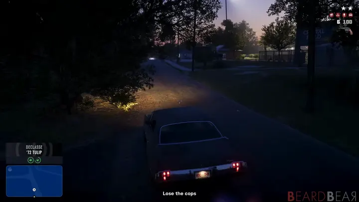

Breakfast Run: прохождение миссии GTA 6
Опубликовано:

- Та самая серия ограблений из второго трейлера: Джейсон снова на ногах, Лусия обещает завтрак — и пара грабит забегаловку Hank’s Waffles, а дальше по цепочке магазин за магазином.
- Глава 2, миссия 8 из 11. Играем за: Джейсон и Лусия.
- Награда: трофей Trust; у Джейсона и Лусии по личной машине.
Миссия коротко
| Глава | 2. Paradise Lost |
| Номер в сюжете | 8 |
| Играем за | Джейсон и Лусия |
| Кто даёт | Джейсон и Лусия |
| Где начинается | Hank’s Waffles и магазины Port Gellhorn |
| Условие | Slam Dunk, затем звонок Джейсона |
| Награда | трофей Trust; у Джейсона и Лусии по личной машине |
| Переиграть | нельзя — сохраняйтесь вручную |

Где начинается
Прохождение по шагам
- Дождитесь звонка Джейсона после Slam Dunk — примерно полдня игрового времени. Значок мотеля станет розовым: вернитесь в номер.
- Сохранитесь и езжайте в Hank’s Waffles к северу от Port Gellhorn.
- Hank’s Waffles. Достаньте оружие, прицельтесь в персонал и пригрозите — □ (X). Касс две, по краям стойки, — заберите деньги из обеих.
- Винный магазин. Вы появитесь внутри: прицельтесь в продавца, заберите деньги.
- Комиссионка — то же самое.
- Заправка и ещё один винный — их пара грабит сама.
- Уйдите от 2 звёзд розыска. Помогают узкие грунтовые дороги.












Советы
- На каждое ограбление — таймер на минуту в правом нижнем углу; уходите хотя бы за 10 секунд до конца.
- Посетителей тоже можно обобрать: L2 + △ (LT + Y) при подсказке Rob — но у них мелочь, кассы выгоднее.
- Ограбления идут цепочкой: выход из магазина или посадка в машину переносит к следующей точке.
- На следующее утро Вики заберёт ноутбук, а Джейсон снова станет играбельным.
Подробности и секреты
- Награда — скрытый трофей Trust и по личной машине у Джейсона и Лусии (PowerPyx, GTABase, space4games, clutchbase).
- Сразу после — Coffee Break (PowerPyx).
- По данным clutchbase, за всю серию набирается около $1 100.
Что можно пропустить
Пропускаемых предметов нет.
Частые вопросы
Какой трофей за Breakfast Run?
Скрытый бронзовый трофей Trust.
Как грабить в GTA 6?
Достать оружие, прицелиться в продавца и пригрозить (□ / X), затем забрать деньги со стойки.
Как начать Breakfast Run?
После Slam Dunk дождитесь звонка Джейсона (около полудня игрового времени) и вернитесь в номер мотеля, когда значок станет розовым.
Какой трофей дают за Breakfast Run?
Скрытый трофей Trust.
Источники: PowerPyx, «GTA 6 Breakfast Run (Check on Jason) Walkthrough», 19.11.2026; PC Gamer, «GTA 6 mission list», 19.11.2026; Of Zen and Computing (трофей Trust), 19.11.2026; GTA BOOM, GTABase, space4games, PowerPyx, Tech4Gamers, nexzy, clutchbase, Business Upturn, gamingpromax — Breakfast Run, 18–28.11.2026. Кнопки указаны для PS5, в скобках — Xbox. Названия миссий — как в английской версии игры.